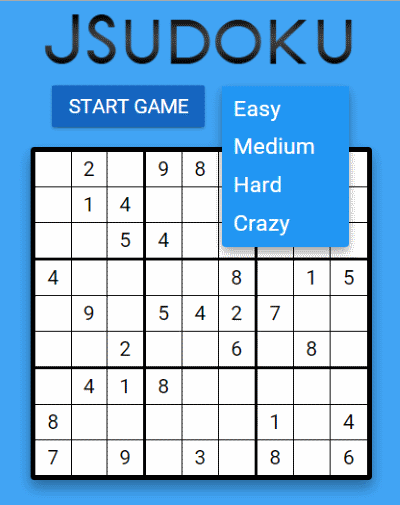
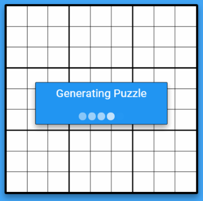
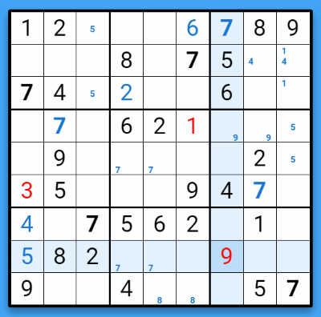
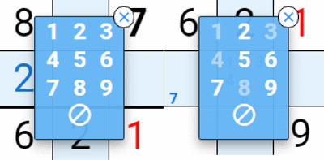
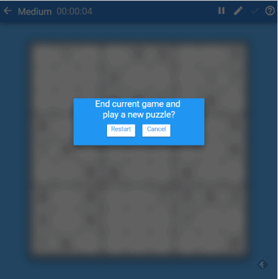
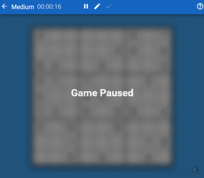
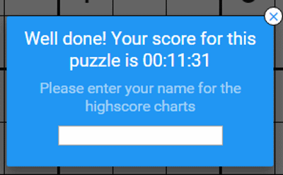
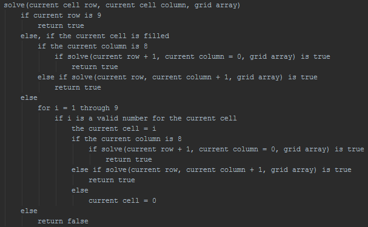

Final Project: Logic and Design
Game Play and Interface
In it's current state, my game is completely playable start to finish. Here is a brief rundown of
the components seen by the user.
Start Screen
 The start screen of my project features a game logo, a div-based start button, a div-based drop down menu, and a mini version of the game grid that displays a preview of the difficulty of the puzzle selected by the user. HTML 5 audio is used for user feedback to mouse clicks on input forms as well. Since the current Crazy specifications are not able to be met by the generator, a random pre-generated puzzle is loaded via AJAX from a JSON puzzle database.Game Start
 Once a difficulty is selected, the Start screen slides away to the right side of the screen, and a progress animation is shown while the program generates a new, unique puzzle for the user.Game Page Toolbar
 The main game view toolbar reflects Google's Material Design look to reflect that of an Android
5.0+ application. On the far left is a back button that can be used to exit the current game and
start a new one. Next to this a is text field that shows the selected puzzle difficulty, and the
duration of the current game. Next, there is the tool area, which contains a pause, note, and error
checking button. On screens and windows larger than 650px, this appears at the center of the toolbar,
and is floated to the right on smaller screens. Lastly, on the far right is a help button that the
user can click to find out more about the game and its tools.
The main game view toolbar reflects Google's Material Design look to reflect that of an Android
5.0+ application. On the far left is a back button that can be used to exit the current game and
start a new one. Next to this a is text field that shows the selected puzzle difficulty, and the
duration of the current game. Next, there is the tool area, which contains a pause, note, and error
checking button. On screens and windows larger than 650px, this appears at the center of the toolbar,
and is floated to the right on smaller screens. Lastly, on the far right is a help button that the
user can click to find out more about the game and its tools.
Game Grid
 The puzzle grid consists of a 9 x 9 table with a white background. Given numbers are displayed in black. Numbers entered by the user will initially appear as blue. When the user clicks on the check tool, any incorrect entries found via a comparison to the solution are turned red. If the user double clicks/taps on any of the black given numbers, all numbers of that value (given and entered) are bolded so that it is easier to find like values. When a user clicks/taps on a grid cell, all cells in the selected cell's row and column are highlighted in light blue, with the clicked cell appearing in a slightly darker shade. In addition to solution numbers, the user can also input notes, which appear within cells as a mini 9 x 9 grid.Input Grid
 When a user selects a cell, an number input grid appears near that cell. On desktop and tablet views, this cell appears centered over the selected cell at all times. In mobile views, this grid is displaced when cells in the far right or left columns are selected so as to better fit on smaller screens. After the user selects a number in Normal input mode, the grid disappears and the selected number is entered into the cell. If the user has selected Note input mode in the toolbar, the grid will stay open for multiple selections, and all selected numbers will turn gray. The grid can be closed by clicking the close button that appears in its upper right corner on desktops and tablets, or by clicking anywhere in the game grid on mobile, desktop, and tablets.Game Popups
 There are a few pop up divs that appear in the game to ask the user questions or show information. When the user clicks the help or back button, or the puzzle is successfully filled out, one of these pop ups animates in at the center of the screen. A translucent modal window backdrop appears behind the pop ups preventing user interaction with the game grid and the toolbar. The game time is also paused and the game grid is blurred out while these pop ups are open.Pause Screen
 If the user wishes to take a break from the game, they may pause the game via the button on the toolbar. This action will then stop the game timer clock, and like pop up events, a translucent layer is applied over most of the game view and the game grid is blurred out. However, unlike the pop ups, the toolbar is not covered in order to allow the player to resume the game when desired. The coloring is also lighter here to differentiate its represented state from that of the pop ups.End Game
 Once all of the input cells have been filled by the user, the check event is automatically ran to verify the input. If all of the cells have been correctly filled, a pop up appears informing the user of their time score for this puzzle, and prompting them to input their name for a planned high-score MySQL database. After the window is closed, the user can then return to the Start screen to begin a new game.Puzzle Generation and Solving
From the outset of this project, I knew that if I had the time and skill to, I wanted to create a sudoku puzzle solver and generator so that my site would not be limited to a fixed set of puzzles. Once I had the original AJAX method working for puzzle retrieval, I started work on a recursive solver that could generate a solution from a pulled puzzle alone. This in turn lead to me creating my first steps at a generator. In order to make such a system work, I was also forced to redesign the data structure for how my sudoku puzzles were represented.Recursive Brute-force Solving
In my initial discussions with fellow students about my ambitions to create a solver and generator for my game, one person mentioned that they had created a recursive solver as part of a class that they had taken at the U of U. A quick search on Google lead me to many different tutorials on how to accomplish this in a variety of languages. The basic concept is to go cell by cell through the entire grid, and test possible values that could fill blank spots until a solution is found.The psuedo-code for this algorithm is actually fairly simple: 
While this algorithm will solve any sudoku with enough time and resources, it is not without some serious drawbacks. The most significant of these become apparent when you look at the process of puzzle generation.
Puzzle Generation
In order to generate a puzzle, you must first start with a valid solution. By passing a blank (that is, filled with 0s) 9 x 9 grid into a recursive solver, you will be given a back a valid solution. The next step is to then systematically remove values from the solution until certain parameters are met for the puzzle you wish to create. As cell values are removed, the validity of the removal is checked to see if the puzzle remains solvable after the removal. Once enough cells have been removed, the generated puzzle must be passed through the solver in a loop many times. The resulting solution of these passes is checked against the original starting solution. If there is no variance, the puzzle is unique and ready to be loaded into the game view. If not, then the process must start over until a valid result occurs.Since a solver is at the core of making a sudoku generator work, it becomes important for it to be as fast and efficient as possible. Unfortunately, the amount of cycles required for recursive solving is ill equipped for this task, and times out the browser on all but the simplest generations.
Human Logic Solving
The way to overcome the computational challenges presented by a recursive solver is to instead implement a solver that uses a series of puzzle solving strategies commonly used by human players. Not only does this allow you to solve a puzzle much more rapidly, it also allows you to know the complexity of a puzzle based on which methods are needed in order to solve it. This becomes incredibly beneficial when you are attempting to generate puzzles which fulfill certain criteria. A few of the methods that I have included so far are:- Naked Singles
- Hidden Singles
- Naked Pairs
- Hidden Pairs
- Pointing Pair
- Box Line
- X-Wing
- Y-Wing
- Hidden Triple
- Naked Triple
- Naked Quad
3-Dimensional Sudoku Model
Unfortunately, in order to implement these human-type logic algorithms, a so called "candidates" system must be used. This is due to the fact that the majority of such strategies do not in fact determine what the correct number for a particular cell will be, but rather eliminate numbers the cannot exist in certain cells. When used in succession, these methods eliminate enough numbers that you can deduce a which number solves a particular cell. In order to make the tracking of these possible candidates easier, I elected to make the 9 x 9 two-dimensional arrays that had been representing my puzzles with in the solver in to 9 x 9 x 10 three dimensional arrays. Within each cell address now exists nine boolean values representing possible candidates, and a 10th position for storing the integer value of any solved cells.Other Notes
Further Improvements to Work On
- Improve puzzle generator and solver to make better puzzles
- Add a high score database for the user to enter their score into
- Fine-tune scalability on different screen sizes
- Solidify UI elements
- Optimize and shorten code